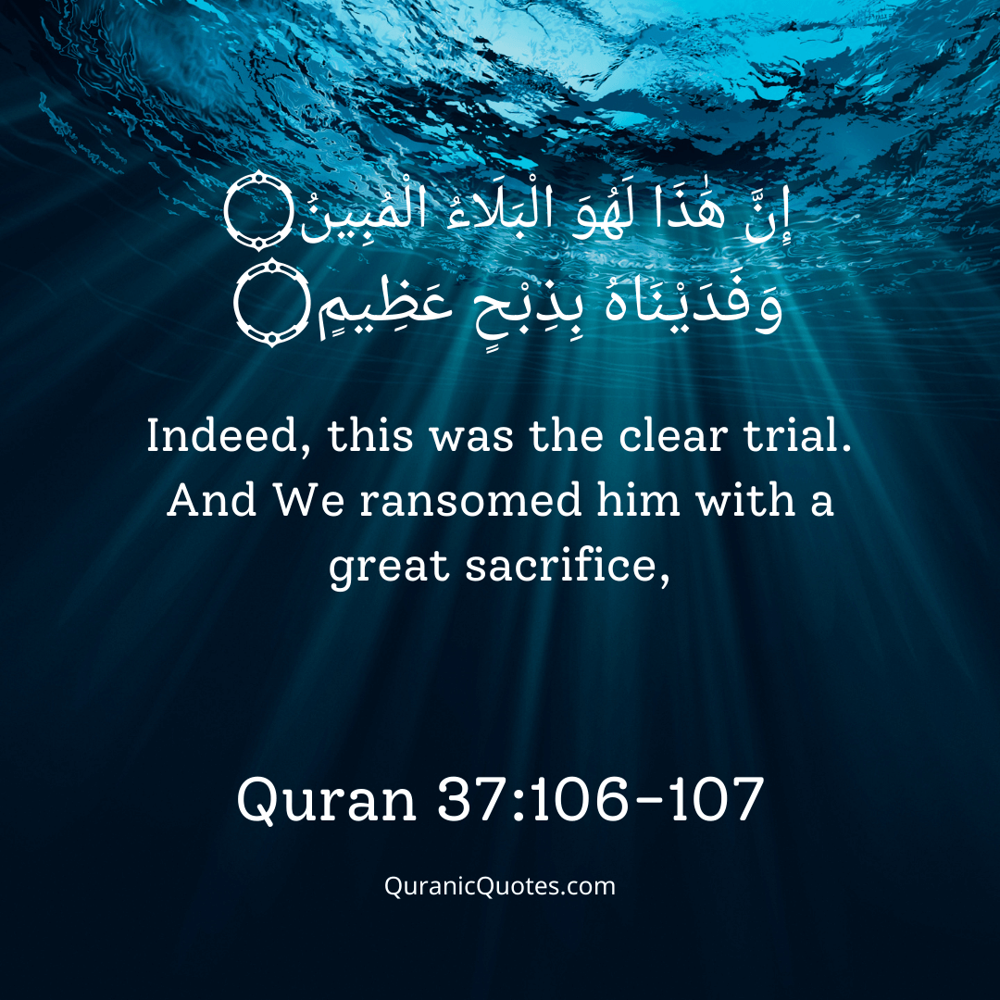
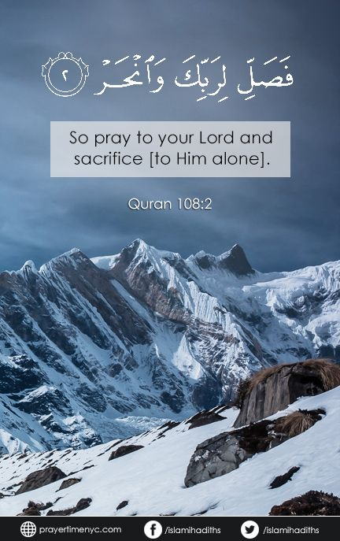
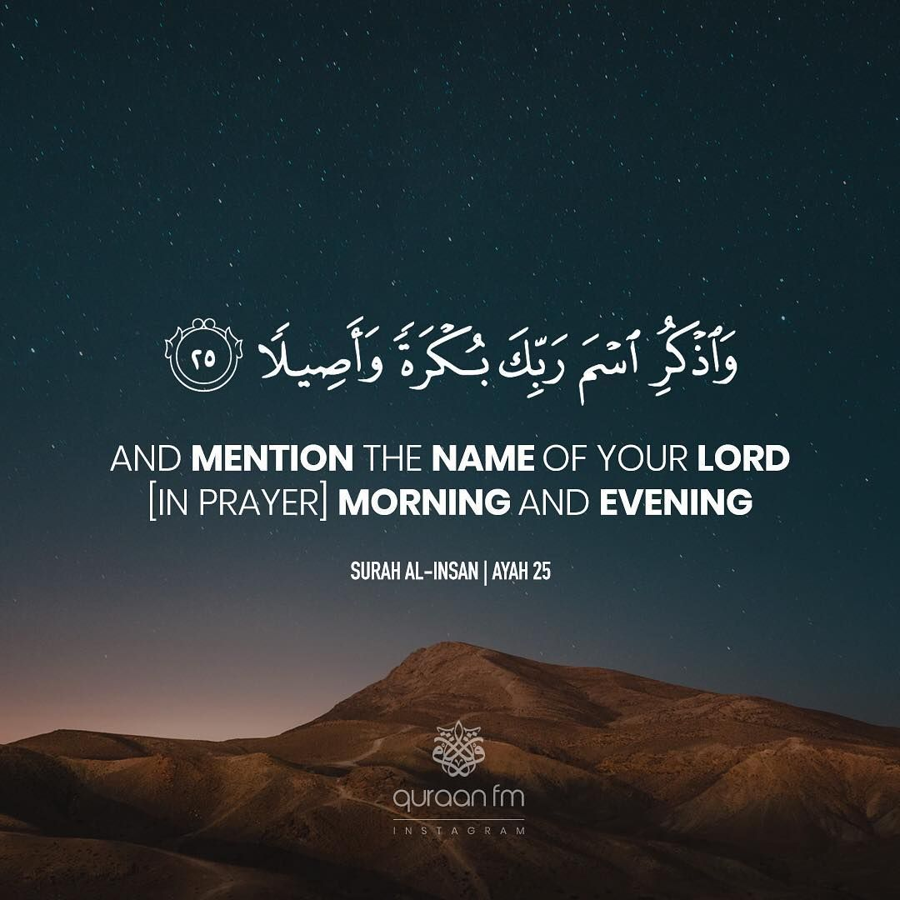
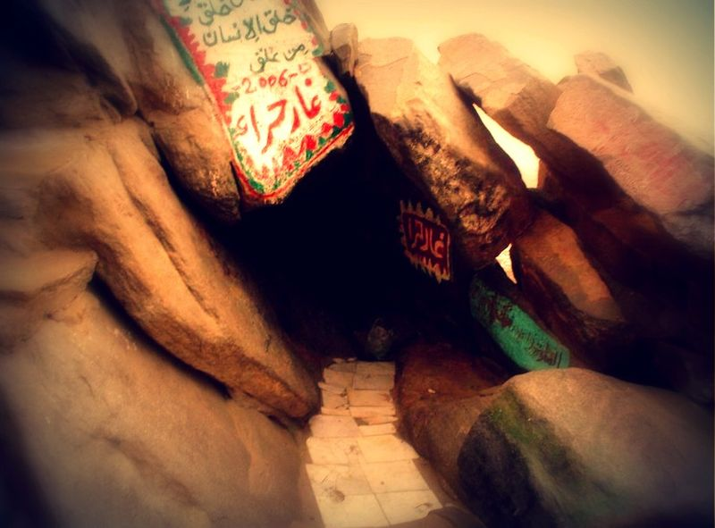

In the name of Allah, the most Beneficent, the most Merciful All Praise is due to Allah, the Lord of the Worlds, the [One Who] Sustains the Heavens and Earths, Director of all that is created, who sent the Messengers (may the peace and blessings of Allah be upon all of them) to rational beings, to guide them and explain the religious laws to them with clear proofs and undeniable arguments. I praise Him for all of His bounties. I ask Him to increase His Grace and Generosity. I bear witness that there is none worthy of worship except Allah alone, who has no partner, the One, Who Subdues, the Generous, the Forgiving. I bear witness that our leader Muhammad is His servant and Messenger, His beloved and dear one, the best of all creation. He was honoured with the Glorious Qur’an that has been an enduring miracle throughout the years. He was also sent with his guiding Sunnah that shows the way for those who seek guidance. Our leader Muhammad has been particularised with the characteristic of eloquent and pithy speech, and simplicity and ease in the religion. May the peace and blessings of Allah be upon him, the other Prophets and Messengers, all of their families and the rest of the righteous.
On another night Abraham was again looking at the sky and he saw the rising moon, so big and bright that he felt he could almost touch it. He thought to himself: This is my Lord. (Qur'an 6.78) But it was not long before the moon set as well. Then he said, Unless my Lord guide me, I surely shall become one of the folk who are astray. (Qur'an 6.78) Abraham then saw the beauty and splendor of the sunrise and decided that the sun must be the biggest and most powerful thing in the universe. But for the third time he was wrong, for the sun set at the end of the day. It was then that he realized that Allah is the Most Powerful, the Creator of the stars, the moon, the sun, the earth and of all living things. Suddenly he felt himself totally at peace, because he knew that he had found the Truth.
When he said unto his father and his folk: What do you worship? They said: We worship idols, and are ever devoted to them. He said: Do they hear you when you cry? Or do they benefit or harm you? They said: Nay, but we found our fathers acting in this manner.
He said: See now that which you worship, You and your forefathers! Lo! they are (all) an enemy to me, except the Lord of the Worlds. Who created me, and He guides me, And Who feeds me and waters me. And when I sicken, then He heals me. And Who causes me to die, then gives me lift (again) And Who, I ardently hope, will forgive me my sin on the Day of judgement. (Qur'an 26.70-82) One day, while all the townspeople were out, Abraham angrily smashed all the idols with his right hand except for one which was very large. When the people returned they were furious.
They remembered the things Abraham had said about the idols. They had him brought forth before everyone and demanded, 'Is it you who did this to our gods, 0 Abraham?' Abraham replied, But this their chief did it. Ask them, if they are able to speak.' The people exclaimed, 'You know they do not speak.' 'Do you worship what you yourselves have carved when Allah created you and what you make?' Abraham continued, 'Do you worship instead of Allah that which cannot profit you at all, nor harm you?' (Qur'an 37.95-6)(Qur'an 21.66)
Finally, Abraham warned them, Serve Allah, and keep your duty unto Him; that is better for you if you did but know. You serve instead of Allah only idols, and you only invent a lie. Lo! those whom you serve instead of Allah own no provision for you. So seek your provision from Allah, and serve Him, and give thanks unto Him, (for) unto Him you will be brought back.(Qur'an 29. 16-17)
The people of Ur decided to give Abraham the worst punishment they could find: he was to be burnt to death. On the chosen day all the people gathered in the centre of the city and even the King of Ur was there. Abraham was then placed inside a special building filled with wood. The wood was lit. Soon the fire became so strong that the people were pushed back by the flames. But Allah said: “O fire, be coolness and peace for Abraham”. (Qur'an 21.69) The people waited until the fire had completely died down, and it was then that they saw Abraham still sitting there as though nothing had happened! At that moment they were utterly confused. They were not, however, moved by the miracle that had just happened before their very eyes. Still Abraham tried to persuade his own dear father, who was named Azar, not to worship powerless, un-seeing, un-hearing statues. Abraham explained that special knowledge had come to him and implored his father, 'So follow me and I will lead you on the right path. 0 my father! Don't serve the Devil.' But Azar would not listen. He threatened his son with stoning if he continued to reject the gods of Ur. He ordered Abraham to leave the city with these words: 'Depart from me a long while.' Abraham said, 'Peace be upon you! I shall ask my Lord's forgiveness for you. Surely He was ever gracious to me.‟ (Qur'an 19.43-7)
Imagine how terrible it must have been for him to leave his home, his family and all that he knew, and set out across the wilderness into the unknown. But at the same time, how could he have remained among people who did not believe in Allah and who worshipped statues? Abraham always had a sense that Allah cared for him and he felt Allah near him as he traveled. At last, after a long hard journey, he arrived at a place by the Mediterranean Sea, not far from Egypt. There he married a noble woman by the name of Sarah and settled in the land of Palestine. Many years passed but Abraham and his wife were not blessed with any children. In the hope that there would be a child, and in keeping with tradition, Sarah suggested that Abraham should marry Hagar, her Egyptian handmaid. Soon after this took place, Hagar had a little boy named Ishmael. Some time later Allah promised Abraham another son, but this time the mother of the child would be his first wife, Sarah. This second son would be called Isaac. Allah also told Abraham that from his two sons-Ishmael and Isaac-two nations and three religions would be founded and because of this he must take Hagar and Ishmael away from Palestine to a new land. These events were an important part of Allah's plan, for the descendants of Ishmael would form a nation from which would come a great Prophet, who would guide the people in the way of Allah. This was to be Muhammad (pbuh), the Messenger of Allah (pbuh). From the descendants of Sarah's child, Isaac, would come Moses and Jesus. So it was that Abraham, Hagar, and Ishmael left Palestine. They traveled for many days until finally they reached the arid valley of Bacca later to be called Mecca), which was on one of the great caravan routes. There was no water in the valley and although Hagar and Ishmael only had a small supply of water left, Abraham left them there knowing Allah would take care of them. Soon all the water was gone. The child began to grow weak from thirst. There were two hills nearby, one called Safa and the other Marwah. Hagar went up one hill and looked into the distance to see if she could find any water, but found none. So she went to the other hill and did the same. She did this seven times. Then sadly she returned to her son, and to her great surprise and joy she found a spring of water bubbling out of the earth near him. This spring, near which the mother and child settled, was later called Zamzam. The area around it became a place of rest for the caravans travelling across the desert and in time grew into the famous trading city of Mecca.
From time to time Abraham traveled from Palestine to visit his family and he saw Ishmael grow into a strong young man. It was during one of these visits that Allah commanded them to rebuild the Ka'bah-the very first place where people had worshipped Allah. They were told exactly The Life of the Prophet Muhammad (Peace and blessings of Allah be upon him) 6 where and how to build it. It was to be erected by the well of Zamzam and built in the shape of a cube. In its eastern corner was to be placed a black stone that had fallen to earth from heaven. An angel brought the stone to them from the nearby hill of Abu Qubays. Abraham and Ishmael worked hard to rebuild the Ka'bah and as they did so they prayed to Allah to send a Prophet from among their descendants. And when Abraham and Ishmael were raising the foundations of the House, (Abraham prayed): 'Our Lord! Receive this from us; Thou, only Thou, art the All-hearing, the All-knowing; Our Lord! And make us submissive unto Thee and of our seed a nation submissive unto Thee, and show us our ways of worship, and turn toward us. Lo! Thou, only Thou, art the Relenting, the Merciful. Our Lord! And raise up in their midst a messenger from among them who shall recite unto them Thy revelations, and shall instruct them in the Scripture and in wisdom and shall make them grow. Lo! Thou, only Thou, art the Mighty, Wise. (Qur'an 2.127-9) When the Ka'bah was completed, Allah commanded Abraham to call mankind to pilgrimage to His Holy House. Abraham wondered how anyone could hear his call. Allah said, 'You call and I will bring them.' This was how the pilgrimage to the Ka'bah in Mecca was established and when Muslims make the pilgrimage today they continue to answer the age-old call of Abraham.

At Hashim's death his brother al-Muttalib took over his duties and responsibilities. He traveled to Yathrib to see his nephew, Shaybah, and decided that as the boy would one day inherit his father's place, the time had come for him to live in Mecca. It was hard for Salma', Shaybah's mother, to let her son go with his uncle but she finally realized that it was for the best. Al-Muttalib returned to Mecca, entering the city at noon on his camel with Shaybah behind him. When the people of Mecca saw the boy they thought he was a slave and, pointing at him, called out „Abd alMuttalib', 'Abd' being the Arabic for 'slave'. Al-Muttalib told them that Shaybah was not a slave but his nephew who had come to live with them. From that day on, however, Shaybah was always affectionately called Abd al-Muttalib. On the death of alMuttalib, who died in Yemen where he had gone to trade, 'Abd alMuttalib took his place. He became the most respected member of his family, loved and admired by all. He was, however, unlike those Arabs who had given up the teachings of Abraham.